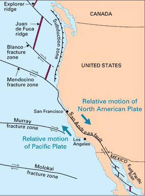

Transform Fault Boundaries Between Plates
Tectonic plates grind past each other at transform fault boundaries. Neither production nor consumption of lithosphere occurs at these boundaries. For U.S. residents, the most famous example is the San Andreas fault in California.
|  | The San Andreas fault is part of a complex structure of plate boundaries associated with the west coast of the United States. Several transform fault boundaries are involved. A sudden displacement along the fault on April 18, 1906 produced the great San Francisco earthquake and fire. This earthquake, however, was but one of many that have resulted from episodic displacement along the fault throughout its life of about 15-20 million years. |
Aerial view of the San Andreas fault slicing through the Carrizo Plain in the Temblor Range east of the city of San Luis Obispo. (Photograph by Robert E. Wallace, USGS.) The Pacific Plate (on the west) moves northwestward relative to the North American Plate (on the east), causing earthquakes along the fault. The San Andreas is the "master" fault of an intricate fault network that cuts through rocks of the California coastal region. The entire San Andreas fault system is more than 800 miles long and extends to depths of at least 10 miles within the Earth. |
Viewed in detail, the fault is a complex zone of crushed and broken rock from a few hundred feet to a mile wide. Many smaller faults branch from and join the San Andreas fault zone. Almost any road cut in the zone shows a myriad of small fractures, fault gouge (pulverized rock), and a few solid pieces of rock.
| Plate Tectonics |
Geophysics concepts
| HyperPhysics | R Nave |